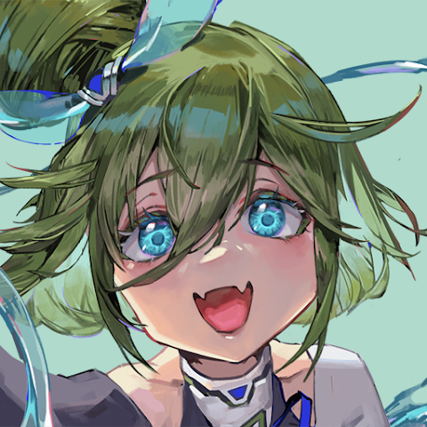

ABOUT

内山 倖徳
2006年に生まれ、千葉県で育ちました。
高校生活でデザインに興味を持ち、専門学校ではWeb制作に心を惹かれ、
Webを中心に取り組んできました。
現在、Web制作会社で勤務することを目標に就活中です。
-
HTML
意味のある構造とアクセシビリティを意識し、複数ページで扱いやすいマークアップを行います。
-
CSS
レスポンシブ対応や共通部品の整理を含め、読みやすく保守しやすいスタイル設計を心がけています。
-
JavaScript
ページ内の操作や表示切り替えなど、必要な動きを軽量に実装できます。

-
Figma
ワイヤーフレーム、ページデザイン、コンポーネント整理まで一連の制作に使用しています。
-
Illustrator
ロゴやアイコンなど、Webサイト内で使うベクター素材の作成に使用しています。
-
Photoshop
写真の補正や切り抜き、Web用画像の調整に使用しています。


-
ChatGPT
実装方針の整理、文章作成、コードレビューの補助に活用しています。
-
Claude
長い文章や設計内容の整理、制作物の改善案出しに活用しています。
-
Gemini
調査内容の比較やアイデアの幅出しに使用しています。
-
DAYS AI
ビジュアル制作の方向性確認や、画像生成の試作に活用しています。
-

niji・journey
イラスト表現の検討や、制作イメージの具体化に活用しています。